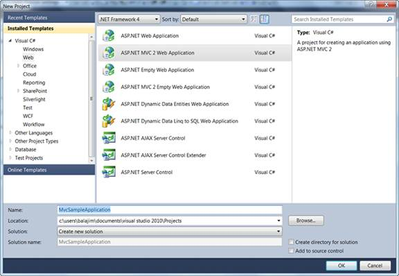
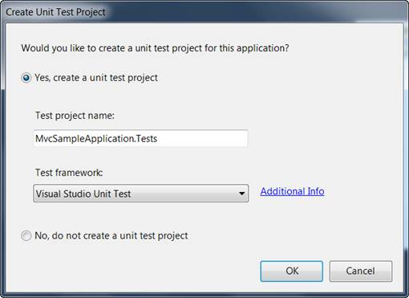

To begin, you will create a new ASP.NET MVC project.
To create a new MVC project
1. On the File menu, click New Project.
The New Project dialog box is displayed.

Figure 31: New Project Dialog Box
2. In the drop-down list at the top, make sure that .NET Framework 4.0 is selected.
3. In the Installed Templates panel, expand either Visual Basic or Visual C#, and then click Web.
4. Select ASP.NET MVC 2 Web Application in the main window.
5. In the Name box, type MvcSampleApplication.
6. In the Location box, type a name for the project folder.
7. If you want the name of the solution to differ from the project name, type a name in the Solution name box.
8. Select the Create directory for solution check box.
9. Click OK.
The Create Unit Test Project dialog box is displayed.

Figure 32: Create Unit Test Project Dialog Box
10. Select No, do not create a unit test project and click OK.
By default, the name of the test project is the application project name with "Tests" added. However, you can change the name of the test project. By default, the test project will use the Visual Studio Unit Test framework.
 Note: The other option becomes unavailable for
selection as shown in the image below.
Note: The other option becomes unavailable for
selection as shown in the image below.

Figure 33:Selecting an Option
11. Click OK.
The new MVC application project and a test project are generated. (If you are using the Standard or Express editions of Visual Studio, the test project is not created.)
Examining the MVC Project
The following illustration shows the folder structure of a newly created MVC solution.

Figure 34: Solution Explorer
The folder structure of an MVC project differs from that of an ASP.NET Web site project. The MVC project contains the following folders:
· Content, which is for content support files. This folder contains the cascading style sheet (.css file) for the application.
· Controllers, which is for controller files. This folder contains the application's sample controllers, which are named AccountController and HomeController. The AccountController class contains login logic for the application. The HomeController class contains logic that is called by default when the application starts.
· Models, which is for data-model files such as LINQ-to-SQL .dbml files or data-entity files.
· Scripts, which is for script files such as those that support ASP.NET AJAX and jQuery.
· Views, which is for view page files. This folder contains three subfolders: Account, Home, and Shared. The Account folder contains views that are used as UI for logging in and changing passwords. The Home folder contains an Index view (the default starting page for the application) and an About page view. The Shared folder contains the master-page view for the application.
The newly generated MVC project is a complete application that you can compile and run without change. The following illustration shows what the application looks like when it runs in a browser.

Figure 35: MVC Application Output